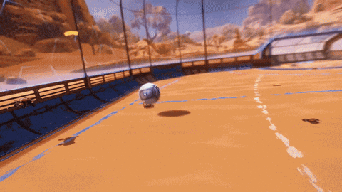
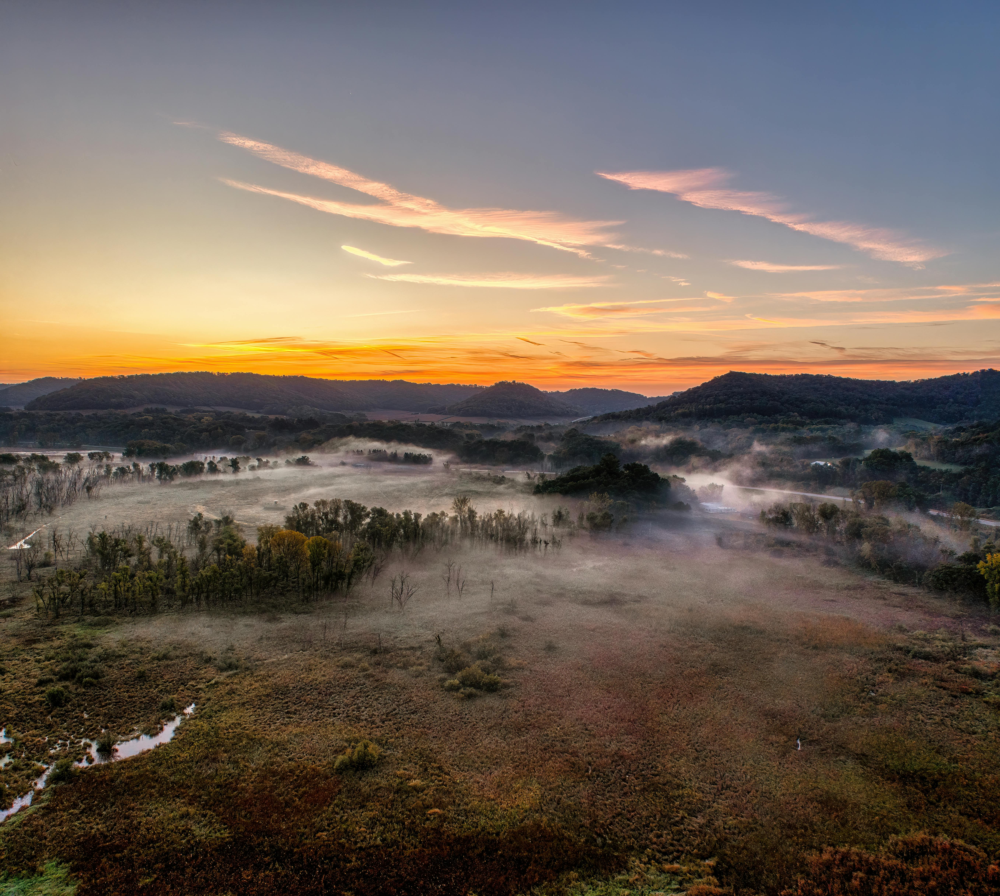

Hobby's

Gamen is nr 1! alle genres.. van OldSchool Runescape (@Niels 99 Wc btw..) tot Satisfactory, League of Legends, ARK: Survival Evolved, Rust, Rocket League, Borderlands, kortom alles!
Niet alleen virtuele spellen maar ook Dungeons & Dragons en Boardgames. Je kan me soms wel vinden in WASD in Turnhout (Gaming cafe).
Buiten kom ik ook wel eens :D En dat doe ik heel graag en regelmatig, want ik moet me soms disconnecten van het digitale.
Wandelen en hiken en zelfs kamperen in de natuur..

En als je me niet ziet gamen, of buiten ziet met een rugzak..Dan ben ik waarschijnlijk aan het programmeren want dat vind ik enorm leuk.. Ik hou ervan uitgedaagd te worden om iets te ontcijferen wat op het eerste zicht “onmogelijk” lijkt..
